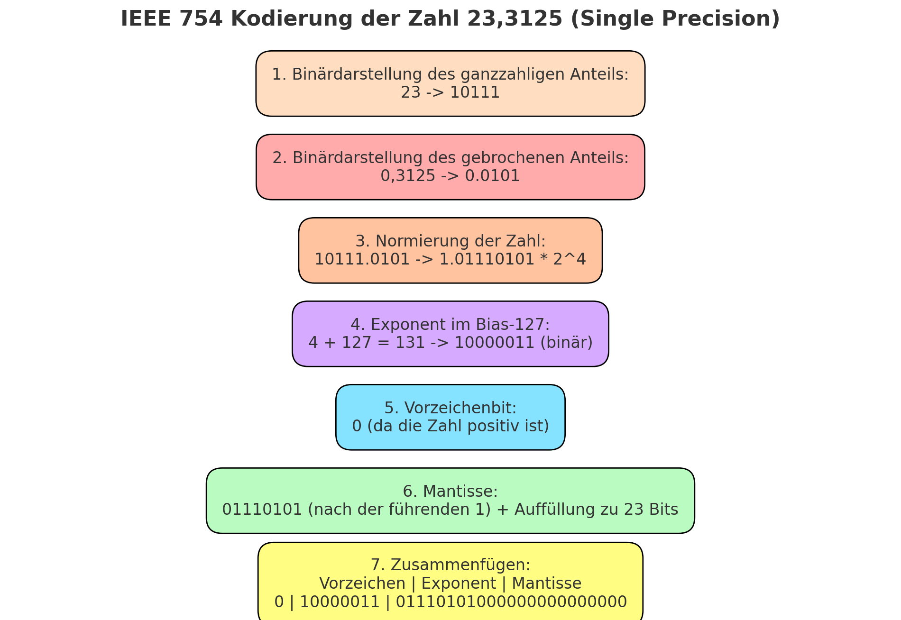

Übersicht
Das Modul vermittelt die Grundlagen moderner Computersysteme und Betriebssysteme. Studierende lernen, wie Hard- und Software aufeinander abgestimmt sind, und setzen Theorie in praktischen Laborübungen um. Themen wie digitale Logik, Zahlensysteme und Hardwarearchitekturen werden vertieft behandelt.
Inhalte
- Flynn’s Klassifikation von Parallelitätsmodellen (z. B. MIMD für Mehrkernprozessoren).
- Hardwarebestandteile: Prozessor, Speicher und Bussysteme.
- Boolesche Algebra (AND, OR, NOT) und Vereinfachung durch Karnaugh-Diagramme.
- Zweierkomplement und Overflow-Management in der Arithmetik.
- Praktischer Einsatz von Linux-Shell-Kommandos wie ls, chmod und grep.
- Prozesse steuern, Dateisysteme verwalten und Scripts erstellen.
- Umsetzung von Dezimalzahlen in Binär- oder Hexadezimalzahlen.
- Gleitkommazahlen nach IEEE-754-Standard (inklusive Normierung und Fehlerbetrachtung).
Ablauf
-
Theoretische Einführung:
- Vorlesungen zu Themen wie Hardwarearchitektur, digitale Logik und Betriebssystemkonzepte.
- Vorstellung von Modellen und Standards wie Flynn’s Klassifikation und IEEE-754.
-
Laborübungen:
- Praktische Anwendung der Theorie durch Schaltungsdesign mit Quartus und FPGA.
- Durchführung von Übungen wie der Berechnung mit Dualzahlen und der Simulation von digitalen Systemen.
Beispiel
